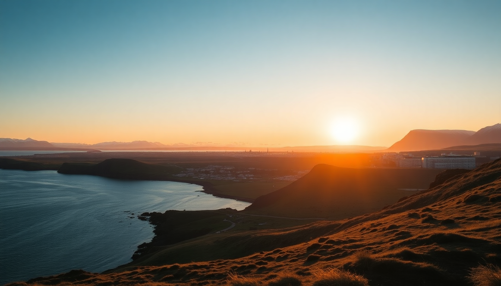

Iceland 10-Day Itinerary: Reykjavik, Golden Circle & Snæfellsnes

We landed in Keflavik on a grey Tuesday morning, grabbed the rental car from Blue Car Rental, and drove straight into the lava fields. Ten days isn’t long for Iceland, but it’s enough to hit the Golden Circle, the Snæfellsnes peninsula, and actually relax in Reykjavik without sprinting between waterfalls. This itinerary skips the Ring Road—saving that for a longer trip—and focuses on the southwest’s best loops with real stop names, real hotel names, and honest opinions on what’s worth your time.
What is the most efficient route for a 10-day Iceland trip?
Start in Reykjavik, then drive the Golden Circle clockwise, then swing west to Snæfellsnes, and finish back in the capital. That avoids backtracking and keeps driving under 3 hours most days.
- Day 1–2: Reykjavik (Laugavegur street, Hallgrímskirkja, Brauð & Co. for cinnamon rolls)
- Day 3–4: Golden Circle (Þingvellir National Park, Geysir, Gullfoss) with an overnight at Hotel Geysir or Ion Adventure Hotel
- Day 5–7: Snæfellsnes (Kirkjufell, Djúpalónssandur black beach, Arnarstapi cliffs); base yourself at Fosshótel Hellnar or Hotel Búðir
- Day 8–9: Return to Reykjavik for the lagoon, museums, and food hall at Grandi Mathöll
- Day 10: Blue Lagoon or Sky Lagoon before the flight home
We did it in exactly this order and never felt rushed. The only stretch over 2.5 hours was the drive from Gullfoss to Snæfellsnes (about 3.5 hours via Route 54). Stop at Hveragerði for a quick geothermal bread pit stop—the Ölverk brewery there also does solid pizza.
Where should I stay in Reykjavik for easy access to everything?
Base yourself near Laugavegur or the Grandi district. Laugavegur puts you on the main shopping street with bars and bakeries. Grandi is quieter, closer to the harbor, and has better parking.
- Budget pick: Kex Hostel on Skúlagata—loud on weekends but the bar downstairs is legendary
- Mid-range: Hotel Borg near Austurvöllur square—small rooms, huge breakfast buffet, and you can walk to Hallgrímskirkja in five minutes
- Splurge: The Retreat at Blue Lagoon if you want to end the trip with a floating massage—book six months out
- Our pick: We stayed at Apartment K on Laugavegur 74. Kitchen, washer, and a quiet courtyard. Perfect for a few days of self-catering after expensive restaurant meals
Parking in Reykjavik is a pain. Most street spots are paid until 6 PM (use the Parka app). If your hotel doesn’t offer free parking, the Háaleitisbraut lot near the main bus station is free overnight.
What are the must-see stops on the Golden Circle that aren’t overcrowded?
Everyone does Þingvellir, Geysir, and Gullfoss. They’re worth it, but you can dodge the worst crowds by timing right. Go to Geysir at 7:30 AM—the parking lot will have maybe five other cars. Gullfoss is best at sunset (around 10 PM in June) when the tour buses are gone.
- Þingvellir National Park: Walk the Almannagjá rift valley between tectonic plates. Skip the visitor center café—the coffee is weak.
- Geysir: The active Strokkur erupts every 5–8 minutes. Don’t bother waiting for the dormant Geysir itself.
- Gullfoss: The upper viewing platform is less crowded than the lower one. Bring a rain jacket—you will get misted.
- Secret Lagoon (Gamla Laugin) in Flúðir: Cheaper and less polished than the Blue Lagoon. We soaked here after driving from Geysir. Changing rooms are basic but clean.
- Faxi waterfall: A smaller, quieter alternative to Gullfoss. It’s a 15-minute detour off Route 35. We had it to ourselves at 9 AM.
The drive between Þingvellir and Geysir on Route 37 is stunning but narrow—watch for sheep. We nearly hit three near the Laugarvatn turnoff.
How do I spend three days on the Snæfellsnes peninsula without rushing?
Snæfellsnes is compact—about 150 km from tip to tip—but the road is slow. Single-lane bridges, gravel sections, and sudden fog. Three days let you do the whole loop without feeling like you’re in a rally.
- Day 1: Drive from Reykjavik to Borgarnes (lunch at Bókakaffi in the old library—good soup), then continue to Stykkishólmur for the Súlnavatn viewpoint. Stay at Fosshótel Hellnar—rooms face the sea cliffs.
- Day 2: Hike the Arnarstapi to Hellnar coastal trail (2 km, flat, puffins in June). Then drive to Djúpalónssandur beach with the shipwreck remains. Skip the Vatnshellir lava tube unless you love tight spaces—we found it claustrophobic.
- Day 3: Kirkjufell mountain and Kirkjufellsfoss waterfall. Go early (8 AM) to avoid the photographers’ tripods. Then drive the northern coast back through Grundarfjörður and Ólafsvík. Stop at Búðir black church for a photo—it’s small but photogenic.
Our favorite meal on the peninsula was at Hótel Búðir restaurant—lamb stew with rhubarb jam. The hotel itself is pricey but the dining room is worth a reservation even if you’re not staying there.
Is the Blue Lagoon worth it, or should I try a different geothermal pool?
The Blue Lagoon is expensive, crowded, and feels like a theme park. But it’s also the most iconic thing in Iceland. If you want the Instagram shot, go. If you want a better soak, choose Sky Lagoon or Krauma.
- Blue Lagoon: Book the 7 AM slot. We did this on our last day before the flight—it’s 20 minutes from Keflavik. The silica mud mask is included. Towels and a drink cost extra.
- Sky Lagoon: On the Reykjavik coast. The 7-step ritual (cold plunge, sauna, mist, etc.) is worth the upgrade. We went at 4 PM and watched the sunset over the ocean. No silica mess.
- Krauma: Near Reykholt on the way to Snæfellsnes. Five geothermal pools at different temperatures. Quiet, wooden, no crowds. We stopped here for an hour between Golden Circle and Snæfellsnes.
- Hvammsvík Hot Springs: Newer, less developed, natural tide pools. Requires a reservation and a 30-minute drive from Reykjavik. We didn’t go, but friends raved about it.
If you only do one, do Sky Lagoon. It’s easier to reach, less touristy, and the cold plunge actually feels like an experience rather than a photo op.
FAQ
Do I need a 4x4 for this itinerary? No. The Golden Circle and Snæfellsnes main roads are paved. We drove a standard Toyota Yaris from Blue Car Rental and had no issues. A 4x4 only matters if you plan to visit the highlands (Landmannalaugar, Þórsmörk), which this itinerary skips. Do get gravel protection insurance—the single-lane bridges have loose stones.
How much should I budget for food per day? Iceland is expensive. Budget around 4,000–6,000 ISK ($30–$45) per person per day for groceries from Bónus (the yellow discount chain) plus one restaurant meal. A sit-down dinner with one drink at Matur og Drykkur in Reykjavik ran us 12,000 ISK per person. We saved money by eating lunch at Bónus sandwiches and cooking pasta at the apartment.
What’s the best way to get from Keflavik Airport to Reykjavik? Rental car is easiest for this itinerary. We used Blue Car Rental—their check-in at Keflavik is fast and they don’t upsell unnecessary extras. The Flybus from the airport to Reykjavik takes 45 minutes and costs about 3,500 ISK per person. If you don’t rent a car, you’ll need to book tours for Golden Circle and Snæfellsnes separately—doable but less flexible.
Conclusion
- Drive the loop Reykjavik → Golden Circle → Snæfellsnes → Reykjavik to avoid backtracking.
- Book hotels like Fosshótel Hellnar and Hotel Geysir early—they fill up months ahead.
- Eat at Brauð & Co. (cinnamon rolls), Bókakaffi (soup), and Grandi Mathöll (food hall variety).
- Skip the Blue Lagoon crowds—choose Sky Lagoon or Krauma instead.
- Pack a rain jacket, thermal layers, and waterproof shoes. The weather changes hourly, and you’ll be outside most of the day.